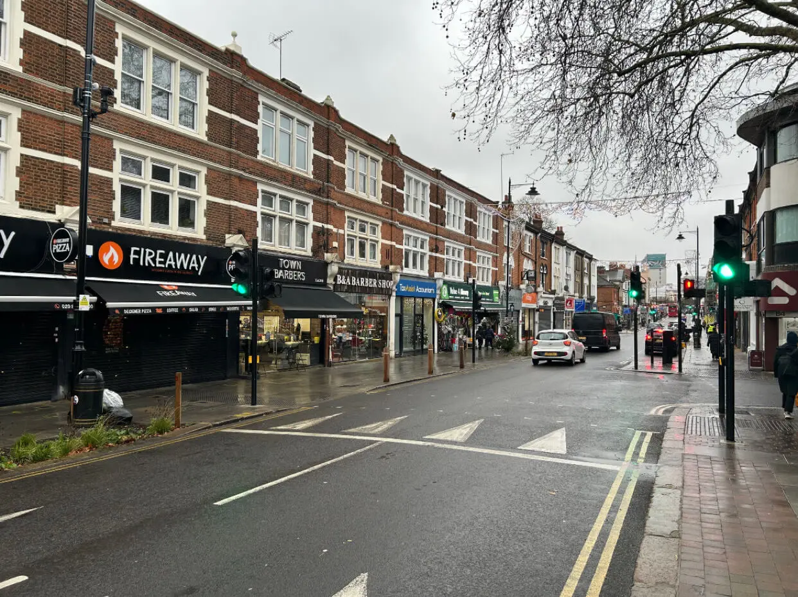
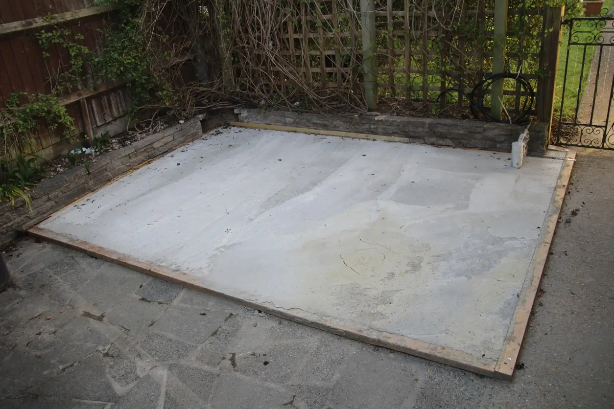
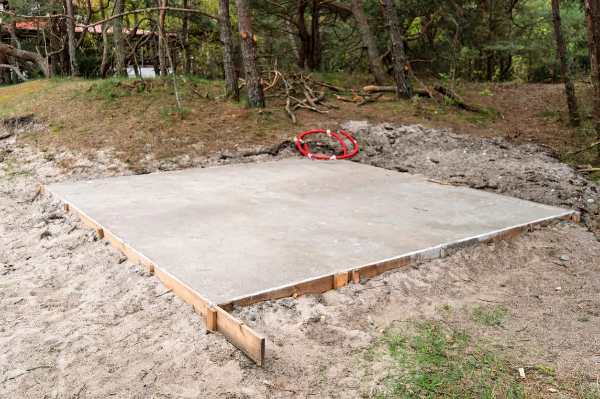
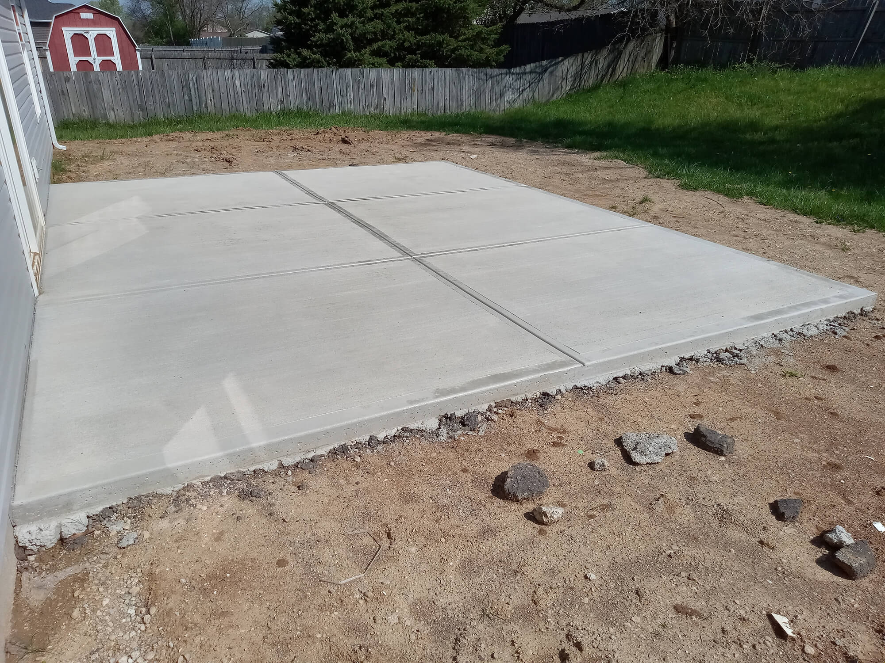
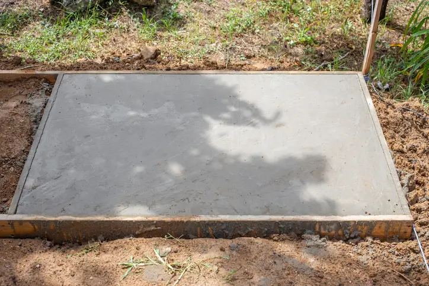
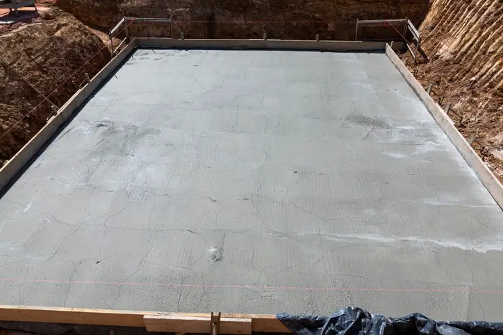

Concrete Bases installed in Enfield Gardens
We fit concrete bases in gardens throughout Enfield built for long term performance and durability.
We’re a concrete base contractor with years of experience specialising in concrete bases for outside structures.
The concrete we use for all concrete base jobs are supplied through established batching plants that serve Enfield.
All loads get mixed by the batching plant or directly in the lorry itself, ensuring the strength and quality of the concrete remain consistent for all projects.
When planning a base installation for a garden structure it’s important knowing that it doesn’t necessarily matter how good the outside building is itself, if it's sat on a poor base the structure will age. A lot of people not just in Enfield generally only think about the outside building without understanding the importance of the foundations beneath it which is a key component to long term durability for any garden building.
The quality this service will bring
- Site-specific ground preparation (excavation, weed membrane, compacted sub-base making sure your base sits flush)
- Edge-forming and fall planning for effective long term drainage
- Reinforcement options (mesh or rebar) for load-bearing bases
- Clean, level finish ready for your shed or building
Why Work With Us
FREE Quotes Same week site visits
5+ Year Warranties For Concrete performance
Strength Guarantee On all base work
120+ Successful base projects throughout Enfield
Years of local Experience In Enfield gardens
Concrete Base Work For Enfield & Surrounding Areas





Common Structures Our Concrete Bases Are Used For
Concrete bases provide the stable, load-bearing foundation needed for a wide range of outdoor structures and construction projects. A properly installed base helps distribute weight evenly, reduces movement over time and creates a level platform for long-term structural reliability.
Across Enfield, we install concrete bases commonly for residential projects, garden developments, outdoor buildings and light commercial structural work where strength, durability and ground stability are important. The exact specification of the base will often depend on the intended use, structural load requirements and site conditions.
Common Uses For Concrete Bases
- Outdoor garden structures requiring stable long-term support
- Timber-framed buildings and prefabricated outdoor constructions
- Storage buildings and secure outdoor equipment housing
- Home improvement projects requiring reinforced ground preparation
- Outdoor leisure and recreational structures
- Workshop and hobby-use buildings requiring level flooring
- Vehicle storage and utility structures
- Commercial storage units and light industrial buildings
- Outdoor office spaces and detached work environments
- General-purpose foundations for new outdoor developments
Every project places different demands on the concrete base beneath it. Factors such as overall size, intended use, weight loading and ground conditions all influence how the base should be prepared and installed. This is why correct excavation, sub-base preparation and concrete installation methods are essential for achieving a strong, dependable result.
Long-Term Concrete Bases Built in Enfield
From how concrete is poured and installed to even how strong-concrete is made in the first place, it's all about timing and local expertise, choosing a local Enfield concrete shed base service means working with people who understand the area, garden layouts and access limitations, this is important so jobs can be planned, executed and completed properly.
Us being a local Enfield concrete base contractor means faster delivery with materials since lorries dont have to travel far and scheduling requirements can be done quicker, therefore you'll get quicker turn arounds and fewer hold ups if any on the day of installation for all Enfield concrete base work.


When we install concrete bases we make sure the end result and quality is consistent with a strong, level concrete base planned and installed with local conditions in mind.
What Local Knowledge gives you
- Enfield specific property type & garden layout knowledge with the know-how to navigate access limitations
- Faster delivery & completion for your concrete base as lorries dont have to travel far & coordination with the batching plant will be faster
- Your base will be installed with local conditions in mind giving you a strong, long term reliable concrete base
Building Your Enfield Concrete Base
Every Enfield concrete base we install starts with a proper look at the garden itself. No two plots are the same. Some homes in Enfield have older patios being removed. Others have soft ground, slight slopes or tight side access that needs planning before any concrete is poured.
We assess ground levels, drainage direction and how your garden building will actually be used. A lightweight garden shed needs a different approach compared to a heavier log cabin or workshop. Getting that right at the start prevents cracking, pooling water and long-term movement.
What we consider before pouring
- Existing ground stability and soil condition
- Correct depth for sub-base and compaction
- Drainage direction to avoid water sitting against the slab
- Future load requirements of your shed or structure
If you're unsure with what your garden needs, you can view some of our guides
Guides
- Is it recommended to have a concrete base installed for a garden shed?
- Why drainage matters under a concrete base
- What makes a concrete base structurally strong
- Common problems caused by poor shed base installations
A Concrete Base That Protects Your Garden Building
Homeowners focus on choosing the right shed or garden building, but the base underneath it is what determines how well that structure will perform over time. When installed properly the base will have a stable platform, meaning it'll keep your building level, dry and structurally supported for years.
When a garden building sits on a surface that moves or settles unevenly, the problems often appear gradually, things like doors begin to stick, panels shift out of alignment, and moisture can slowly find its way inside the structure. A strong concrete base helps prevent these issues by spreading the load evenly across the slab and keeping the building stable in all seasons.
This stability is especially important for heavier garden buildings such as log cabins, workshops or larger storage sheds. A durable concrete base allows these structures to sit on a firm, level surface without gradual sinking or twisting as the ground naturally changes over time.
It also improves the usability of the space. When the base is level and solid, doors open properly, shelving sits straight, and the interior remains easier to maintain.
Over the long term, this helps your garden building last longer and reduces the need for repairs or adjustments in the future.
For many Enfield homeowners, a shed becomes more than simple storage. It might be used as a garden workshop, hobby space, or somewhere to keep valuable equipment. Therefore a properly installed garden base ensures the structure above it has the support it needs from day one.
If you're planning a new shed or any other garden building or even upgrading an existing one, you can get in touch either by phone or email
Locations We Cover For Concrete Base Work
While Enfield is our main service area, we also install concrete bases and concrete foundations throughout nearby parts of North London. Many of these locations contain similar property types, garden layouts and access considerations, allowing us to provide the same structured installation approach across every project.
Concrete Bases Designed Around How You Use Your Space
A lot of concrete bases in Enfield are installed with a simple “measure, pour, done” approach. It works on paper, but in reality most homeowners end up using their garden very differently once everything is in place. What seems like enough space at the start can quickly feel restrictive if the layout hasn’t been properly thought through.
That’s why we look beyond just the footprint of the outside building. The way you move around your garden, how often you access the building, and what you actually plan to use it for all play a role in how the base should be sized and positioned. A well-planned base doesn’t just support the structure — it shapes how usable the entire area becomes.
For example, if your shed will be used as a workspace, having clearance around the sides can make a big difference for airflow, maintenance and general comfort. If it’s mainly for storage, positioning closer to the house or along a boundary might be more practical. These are small decisions early on, but they have a long-term impact on how the space functions.
Another common issue we see in Enfield is homeowners outgrowing their setup. A base that’s built too tight to the original structure can limit upgrades later on. Planning slightly ahead even if it's by a small margin gives you flexibility if you decide to expand, upgrade to a larger building, or change how the space is used in future.
What we factor into your base layout
- How you plan to use the shed or building day-to-day
- Door access, walkways and comfortable movement around the structure
- Future upgrades or potential changes in use
- Positioning within your garden for practical, long-term use
Taking this approach means your concrete base installation isn’t just built for the now, it’s built for how you’ll use your garden over time.
Concrete Base Solutions For Different Building Types
We install concrete bases for a wide range of residential and outdoor construction projects throughout Enfield. Explore our dedicated service pages below for more information on specific base types, installation requirements and project considerations.
Want a durable shed base in Enfield?
Helpful guides
Need a quote?
📞 Call for a Free estimate